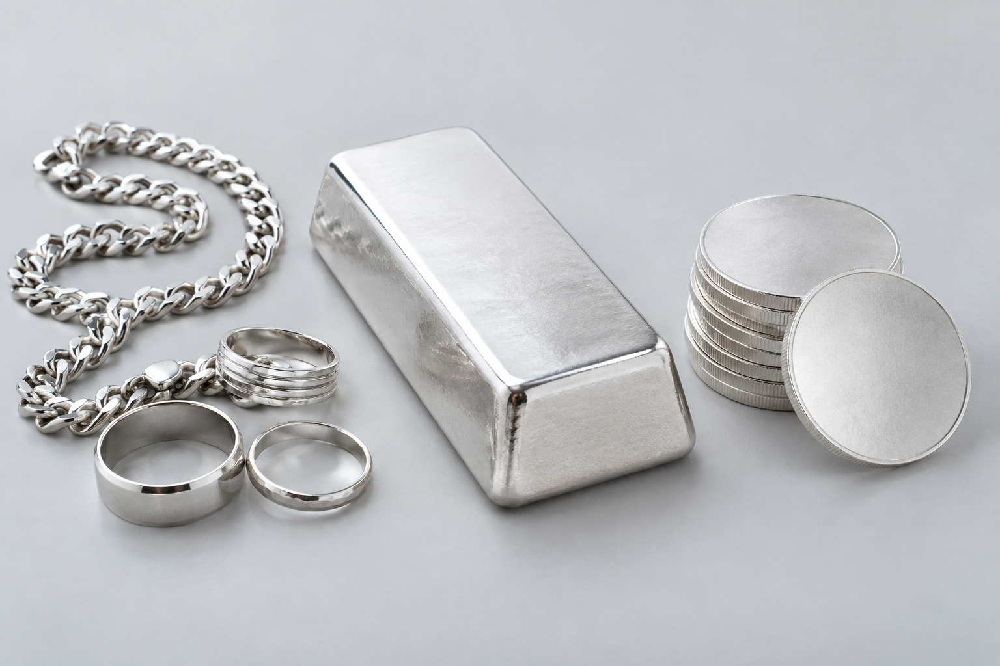

GORZÓW WIELKOPOLSKI / SREBRO
Twoje srebro.
Jasna wartość.
Monety, sztabki, biżuteria. Sprawdź orientacyjną wartość swoich przedmiotów — prosto, w jednym miejscu.

Ag · 47Srebro w wielu formach
Monety, sztabki, biżuteria. Sprawdź orientacyjną wartość swoich przedmiotów — prosto, w jednym miejscu.
